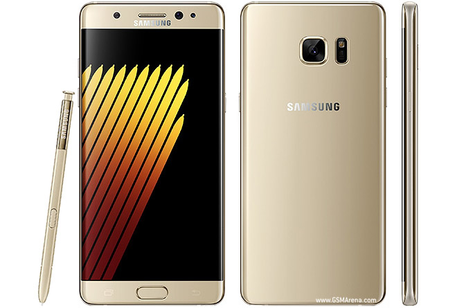
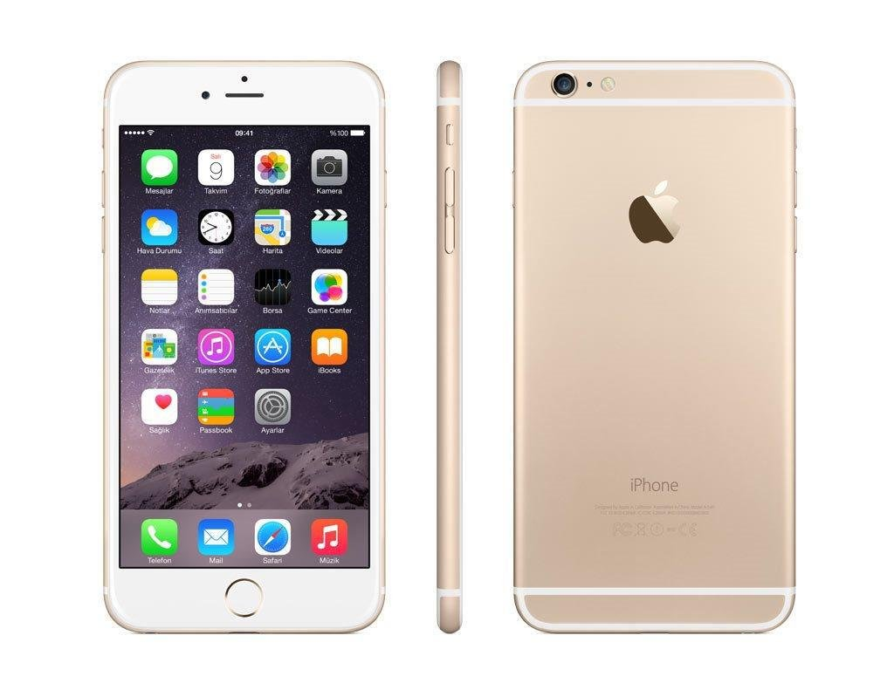

The Galaxy Note 7 became one of the most infamous phones ever released when reports of batteries overheating and catching fire turned a highly anticipated flagship into a massive recall.
Then there was the iPhone 6, which became unexpectedly famous for being a little too easy to bend. The controversy, known as Bendgate, showed how even a small design decision could become a huge story.
But not every headline comes from failure. Samsung later pushed the smartphone in a completely different direction with the Galaxy Fold, introducing a phone that could unfold into a larger screen, and the Galaxy Flip, which brought the classic flip-phone idea into the smartphone era.
| Phone | Year Of production | What Happened |
|---|---|---|
| Galaxy Note 7 | 2014 | Batter fires lead to recall |
| iPhone 6 | 2014 | "Bendgate" |
| Galaxy Z Fold | 2019 | First foldable |
| Galaxy Z Flip | 2020 | Revived flip-phone design with a modern screen |

The Galaxy Note 7 was supposed to be one of Samsung's biggest flagship releases of 2016. But shortly after its launch, reports began appearing of phones overheating and catching fire because of problems with their batteries.
Samsung reacted quickly. The company stopped sales and announced a replacement program, recalling the affected phones and promising customers a new Note 7 with a different battery.
But then something unexpected happened.
Some of the replacement phones started catching fire too. What was supposed to be the solution had become part of the problem. Samsung eventually stopped production and recalled every Galaxy Note 7, including the replacement devices.
The story became so serious that the phone was eventually banned from flights in the United States. A flagship that was meant to showcase Samsung's technology had become one of the most infamous phone failures in history.
Watch the story →
When Apple introduced the iPhone 6 and iPhone 6 Plus in 2014, the phones were a major change from previous iPhones. They were thinner, had larger displays, and featured a new aluminum design. Apple presented them as some of the biggest advancements in iPhone history.
But shortly after the phones reached customers, a very different story began spreading across the internet.
People started posting pictures and videos of bent iPhone 6 Plus devices. The problem quickly became known as “Bendgate.” The larger iPhone 6 Plus attracted most of the attention, with reports focusing on bending around the area near the volume buttons.
The story exploded online, and suddenly one of Apple's biggest new features its thin, sleek design had become part of the controversy.
Apple responded by saying that bending was extremely rare and that it had received only nine complaints. The company also pointed to its testing process and the extensive durability testing performed on the phones.
Later testing showed that the iPhone 6 could be permanently bent with less force than some earlier iPhone models, although that did not mean that every iPhone 6 was going to bend during normal use.
What started as a few reports became a worldwide tech story, turning the iPhone 6 into one of the most memorable smartphones of its generation not just for what it introduced, but for the fact that people discovered it could bend.
Watch the storyFor years, smartphone screens had been getting bigger. But Samsung decided to ask a completely different question: what if the screen could fold?
In 2019, Samsung introduced the Galaxy Fold, a phone that could transform from a regular-sized smartphone into something closer to a tablet. Instead of carrying two devices, the Fold tried to put both experiences into one.
Making that possible was far more complicated than simply putting a hinge in the middle of a phone. Samsung had to develop a flexible display and a sophisticated hinge that could allow the device to open like a book while keeping everything inside working together.
The result was one of the strangest smartphones people had ever seen. It wasn't just a phone with a bigger screen the phone itself could change shape.
Watch the storySamsung didn't stop at making a phone that unfolds into a tablet. The company took the idea in the opposite direction.
The Galaxy Z Flip brought back something that many people remembered from older phones: the satisfying act of flipping a phone shut. But this time, instead of a small keypad and tiny screen, there was a full modern smartphone hidden inside.
When opened, the Galaxy Z Flip had a large 6.7inch display. When closed, the entire phone folded down into a much smaller, pocket-friendly shape.
And the hinge wasn't just there to make the phone fold. It could hold the phone at different angles, allowing it to stand on its own for things like selfies, video calls, and hands-free video. Samsung even designed a special Flex Mode around this ability.
The Flip showed that foldable phones didn't have to be about making a phone bigger. They could also make a phone smaller, more portable, and completely different from the smartphones people were used to.
Watch the story